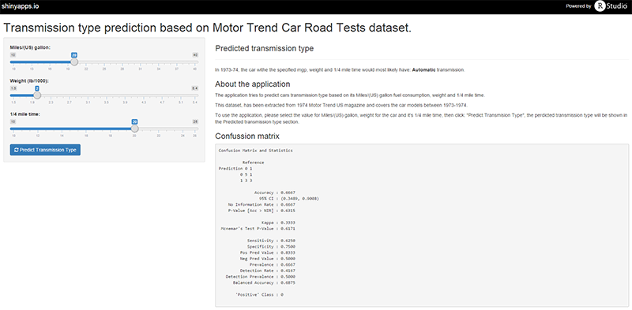

1974 Motor Trends US magazine, using built model based on 32 automobiles (1973-74) models.
Tries to predict the transmission type based on Miles/(US) gallon, Weight and 1/4 mile time.

Application for prediction uses a subset of mtcars dataset available in R datasets packages.
Prediction model is using:
## [1] "mpg" "wt" "qsec"